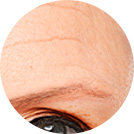
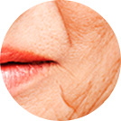

Cápsulas rejuvenecedoras
EL PODER DE 1000 PÉPTIDAS EN UNA SOLA CÁPSULA
El sérum Medutox contienen:
- Aceite de oliva - 10%
- Extracto de Algae -2%
- Agua de chamomilla
- Aceite 100% de limonero - 0.1%
- Aceite de yerbabuena - 0.2%
- Extracto de Medusa 0.1%
¡La fórmula del sérum hará
desaparecer las arrugas
¡Date prisa y pídelo!
¡El nuevo producto Medutox
tiene un precio bajísimo!
descuento
en especial
Efectos de Medutox
-
Está clínicamente probado que Medutox detiene el proceso del envejecimiento de las células y regula su trabajo.
Una amplia gama de vitaminas y minerales, así como betaina en su fórmula, forman una potente molécula capaz de penetrar en las capas más profundas de la piel para conseguir el máximo efecto de Medutox.
Los aminoácidos que contienen las péptidas de Medutox tienen potentes propiedades antioxidantes, que consiguen que el sérum trabaje más activamente durante 24 horas. Los aminoácidos funcionan como una esponja capturando la humedad transepidérmica para evitar que se pierda, garantizando la hidratación de la piel y una reducción inaudita de las arrugas.
Sin hormonas -
-

Incluye varios componentes de protección UV, así como elementos biológicamente activos para restaurar las células de la piel.
-
Ayuda a prevenir la reaparición de arrugas, enriqueciendo la piel del rostro y el cuello con una amplia variedad de vitaminas, minerales y aminoácidos.
-

Activa la producción de colágeno natural de las capas más profundas de la piel. Con Medutox, la piel recupera su elasticidad y juventud en un tiempo récord.
¡Ahora es posible quitarse 10 años de la cara
en 14 días! -
Cómo aplicar
-
Paso 1
Limpia la piel de maquillaje e impurezas con gel desmaquillante o tónico.
-
Paso 2
Aplica el sérum sobre la piel de la cara.
-
Paso 3
Tu rostro tendrá inmediatamente un aspecto firme y muy hidratado. El sérum se mantiene activa durante 24 horas tras su uso.
-

-
¿Cuál es el peligro de las arrugas?
Las arrugas son pliegues visibles de la piel resultantes de una actividad excesiva de los músculos faciales, y la pérdida de elasticidad de la piel, la firmeza y otras razones. La elasticidad se consigue gracias a las fibras de colágeno de la dermis, y la firmeza se obtienes a través de moléculas de ácido hialurónico que se encuentran entre las fibras de colágeno.
Las arrugas bloquean los vasos sanguíneos, impidiendo la circulación sanguínea y linfática de la piel. No permiten que el oxígeno entre en la piel, aparecen nuevas arrugas y las que ya existían se agudizan. Si no se tratan, el proceso es irreversible.
Métodos de prevención de arrugas: lociones, mascarillas, inyecciones de Bótox, exfoliantes químicos y cirugía plástica. Los últimos tres métodos se consideran los más peligrosos.
BENEFICIOS DE LAS PÉPTIDAS
La fórmula innovadora del sérum es el resultado de los estudios de muchos años. Se basa en las péptidas de Turritopsis nutricula (medusa inmortal) que pueden rejuvenecerse infinitamente. Gracias a eso, el sérum elimina las causas del envejecimiento de la piel.
OPINION DE LOS EXPERTOS
Al fabricar nuestros productos para el cuidado facial, le damos preferencia a los ingredientes naturales. La empresa Hendel utiliza métodos innovadores para crear una popular línea de cuidado facial.
Antes de llegar a las estanterías de los establecimientos, nuestros cosméticos se someten a controles dermatológicos y ensayos clínicos. Se ha probado que Medutox es altamente efectiva en la reducción de las arrugas y el rejuvenecimiento de la piel.
- 97 de cada 100 sujetos experimentaron resultados visibles después de la primera aplicación.
- El 93 % de las arrugas pequeñas y superficiales desaparecieron tras haber aplicado El sérum durante 10 días.
Juan Peña
Especialista en productos
para el cuidado de
la piel, Hendel